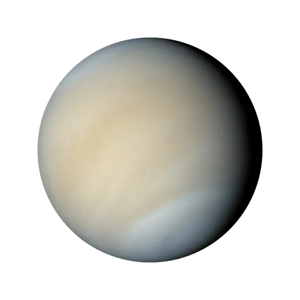
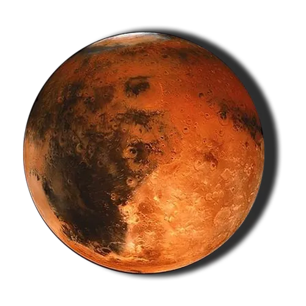

NASA Metric
| Mercury | Venus | Earth | Mars | |
|---|---|---|---|---|
| Images of Planets |  |  | ||
| Orbital Period (days) | 88.0 | 224.7 | 365.2 | 687.0 |
| Orbital Velocity (km/s) | 47.4 | 35.0 | 29.8 | 24.1 |
| Orbital Inclination (degrees) | 7.0 | 3.4 | 0.0 | 1.8 |
| Orbital Eccentricity | 0.206 | 0.007 | 0.017 | 0.094 |
| Obliquity to Orbit (degrees) | 0.034 | 177.4 | 23.4 | 25.2 |
| Mean Temperature (C) | 167 | 464 | 15 | -65 |
| Surface Pressure (bars) | 0 | 92 | 15 | -65 |